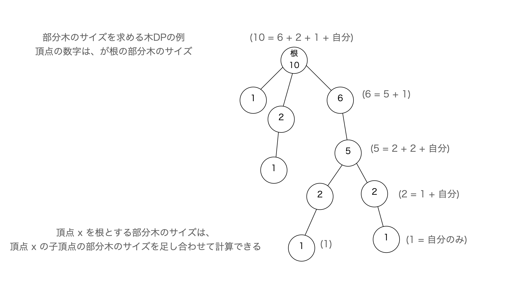

TreeDPは、木の上でDPをするというものです。私は緑ぐらいの頃は木やグラフというものに謎の苦手意識を持っていたのですが、今では木やグラフの上でのDPはむしろ遷移の方向や道がすでに決まっているのでむしろ普通のDPよりも簡単だなという印象を持っています。
TreeDPでは木の辺の方向に従ってDPをします。例えば木の根から各頂点への距離を求めるのもTreeDPの一つです。

TreeDP は葉 (下) から根 (上) の方向に向かう場合が多いです。なぜなら、部分木に関する情報がわかれば嬉しいことが多いからです。 もう少し詳しく言うと、根付き木で部分木に関する Tree DP を行う順番は根からの DFS 到達順の逆順 です。
ある頂点 \(u\) の部分木の集約を、\(u\) と \(u\) の子頂点それぞれ (\(c\) とする) に対して以下の処理で計算します。
int size_[N]; // 部分木サイズ
int parent[N];// 親頂点
for(int u : r_dfs){// dfs の逆順
for(int c : G[u]){
if(parent[c] != u)continue;
for(int x = 0 ; x <= size_[u] ; x++){
for(int y = 0 ; y <= size_[c] ; y++){
.... // 何らかの処理
}
}
}
size_[parent[u]] += size_[u];// サイズは親の方に加算する
}